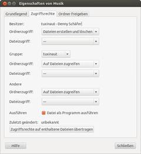
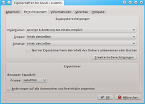
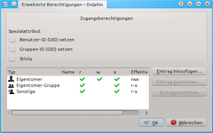

Rechte
Dieser Artikel wurde für die folgenden Ubuntu-Versionen getestet:
Dieser Artikel ist größtenteils für alle Ubuntu-Versionen gültig.
Zum Verständnis dieses Artikels sind folgende Seiten hilfreich:
Dieser Artikel beschreibt die Zugriffsrechte auf Dateien von Linux - und somit auch Ubuntu. Die Zugriffsrechte regeln zum Beispiel, welcher Benutzer und welche Gruppe den Inhalt eines Verzeichnisses (ein Verzeichnis ist auch nur eine Datei) lesen darf. Neben dem Leserecht gibt es noch weitere Rechte, mit denen der Zugriff gesteuert werden kann.
Die meisten Dateimanager bieten Möglichkeiten, sich über Dateieigenschaften zu informieren und diese auch zu verändern. Ein Ändern ist natürlich nur möglich, wenn man selber die notwendigen Rechte hat und das zugrunde liegende reale Dateisystem dies gestattet. Informationen dazu findet man im Artikel Rechte/Dateimanager.
Für komplexere Anwendungen bietet Linux seit einiger Zeit auch die Möglichkeit, den Zugriff über ACL (Access Control List) genauer festzulegen. Die ACL müssen explizit aktiviert werden. Ihre Erklärung würde hier zu weit führen; sie ist Gegenstand des Artikels ACL.
Grundlagen¶
Dateieigenschaften im VFS¶
UNIX-Systeme wie Linux verwalten ihre Dateien in einem virtuellen Dateisystem (VFS, Virtual File System). Dieses ordnet jeder Datei über eindeutig identifizierbare Inodes unter anderem folgende Eigenschaften zu:
Dateityp (einfache Datei, Verzeichnis, Link, ...)
Zugriffsrechte (Eigentümer-, Gruppen- und sonstige Rechte)
Größe
Zeitstempel
Verweis auf Dateiinhalt
Jedes unter Linux gängige UNIX-Dateisystem (z.B. ext2/3/4, ReiserFS, xfs usw.) unterstützt diese Rechte. Gar nicht umgesetzt werden die Rechte hingegen auf VFAT-Dateisystemen; dort können Dateirechte lediglich beim Einhängen simuliert werden. Partitionen mit dem Windows-Dateisystem NTFS werden zwar in Linux standardmäßig ähnlich wie VFAT-Partitionen behandelt; mit den Mount-Optionen permissions und acl lässt sich aber auch auf NTFS-Partitionen eine echte Rechteverwaltung wie bei UNIX-Dateisystemen einrichten. Siehe hierzu Windows-Partitionen einbinden sowie NTFS-3G.
Benutzer/Gruppennamen¶
Die in Dateimanagern und Terminalausgaben benutzten Namen für die Gruppen und Benutzer sind lediglich „übersetzte“ Namen. Im Dateisystem selber werden diese Klarnamen nicht gespeichert, sondern lediglich ihre mit UID und GID bezeichneten numerischen Entsprechungen.
|  |
| Rechteeinstellungen |
Rechte in symbolischer Darstellung¶
Im Terminal lassen sich die Rechte mit dem Befehl ls -l anzeigen. Im Folgenden sind als Beispiel die Dateirechte des Verzeichnisses /var/mail/ dargestellt (Befehl: ls -ldh /var/mail/):
drwxrwsr-x 2 root mail 4,0K Apr 23 2012 /var/mail/
Für die Darstellung der Rechte sind die markierten Teile der Ausgabe relevant:
Rechterelevante Informationen von ls -ldh /var/mail | ||
| drwxrwsr-x | root | |
| Der erste Buchstabe kennzeichnet den Dateityp. Danach folgen die Zugriffsrechte. | Eigentümer der Datei | Gruppe |
Wie auch in anderen Betriebssystemen kann man verschiedene Rechte für Eigentümer und Gruppe vergeben. Neben Eigentümer und Gruppe gibt es noch eine weitere, allgemeine Gruppe. Diese Gruppe nennt sich andere (engl. "others").
Darstellungsarten¶
Neben der symbolischen Darstellung (z.B. rwxrwxr-x) gibt es auch noch eine oktale Darstellung (nach dem Oktalsystem). Die Grundrechte (Lesen, Schreiben, Ausführen) und Kombinationen daraus werden hierbei durch eine einzelne Ziffer repräsentiert und dem Eigentümer, der Gruppe und allen anderen zugeordnet. Je nach Anwendung wird dabei von unterschiedlichen Grundwerten ausgegangen und entweder Rechte gegeben oder entzogen. Bei chmod wird beispielsweise von der Grundeinstellung „keine Rechte“ (000) ausgegangen und Rechte gegeben, wohingegen bei umask von „alle Rechte vorhanden“ (777) ausgegangen und Rechte entzogen werden. Entsprechend sind die Werte je nach Anwendung anders.
| Mögliche Werte für: | ||||
| chmod (octal) | umask (octal) | Symbolisch | Binäre Entsprechung | |
| Lesen, schreiben und ausführen | 7 | 0 | rwx | 111 |
| Lesen und Schreiben | 6 | 1 | rw- | 110 |
| Lesen und Ausführen | 5 | 2 | r-x | 101 |
| Nur lesen | 4 | 3 | r-- | 100 |
| Schreiben und Ausführen | 3 | 4 | -wx | 011 |
| Nur Schreiben | 2 | 5 | -w- | 010 |
| Nur Ausführen | 1 | 6 | --x | 001 |
| Keine Rechte | 0 | 7 | --- | 000 |
Hier ein paar Beispiele:
rwxrwxrwxentspricht0777(chmod) oder0000(umask): Jeder darf lesen, schreiben und ausführen.rwxr-xr-xentspricht0755(chmod) oder0022(umask): Jeder darf lesen und ausführen, aber nur der Dateibesitzer darf diese Datei (oder das Verzeichnis) auch verändern.
Bei folgenden Beispiele behandeln zusätzlich die Sonderrechte. Diese Rechte können nicht per umask gesetzt werden:
rwsr-xr-xentspricht4755(chmod): Jeder darf lesen und ausführen, der Eigentümer darf diese Datei oder das Verzeichnis verändern. Zusätzlich ist noch das Set-UID-Recht gesetzt.rw-r--r-Tentspricht1644(chmod): Jeder darf lesen, der Eigentümer darf schreiben. Zusätzlich ist das Sticky-Bit gesetzt (aber nicht das Ausführrecht, daher ein großesT).
Experten-Info:
Alle Rechte werden durch entsprechend gesetzte Bits repräsentiert. Mit der Wertigkeit der gewünschten Bits kann dann entsprechend der Oktalwert errechnet werden.
| Recht | Wert | Recht | Wert | |
| Lesen | 4 | Set-UID | 4 | |
| Schreiben | 2 | Set-GID | 2 | |
| Ausführen | 1 | Sticky | 1 |
Zugriffsrecht¶
Die nachfolgenden Erklärungen beziehen sich vor allem auf Dateien vom Typ File (ohne Kennbuchstaben) und "Ordner" (Directory, Kennbuchstabe d).
Nach dem Dateityp kommen drei Zeichengruppen zu je drei Zeichen. Diese kennzeichnen die Zugriffsrechte für die Datei bzw. das Verzeichnis. Hat der Benutzer/Gruppe/andere ein Recht, so wird der Buchstabe dafür angezeigt; ansonsten wird ein - dafür angezeigt.
In obigen Beispiel erscheint nach dem Dateityp dann die Zeichenfolge rwxrwsr-x. Wenn man diese in drei Dreiergruppen aufteilt, erhält man diese Gruppen:
rwx: Rechte des Eigentümersrws: Rechte der Grupper-x: Recht von allen anderen (others)
|  |
|  |
| KDE-Rechteeinstellungen |
Die folgende Tabelle erklärt die Bedeutung der einzelnen Buchstaben, Diese stehen immer in der gleichen Reihenfolge:
| Symbole für Zugriffsrechte | |||
| Zeichen | Bedeutung | Beschreibung | |
r | Lesen (read) | Erlaubt lesenden Zugriff auf die Datei. Bei einem Verzeichnis können damit die Namen der enthaltenen Dateien und Ordner abgerufen werden (nicht jedoch deren weitere Daten wie z.B. Berechtigungen, Besitzer, Änderungszeitpunkt, Dateiinhalt etc.). | |
w | Schreiben (write) | Erlaubt schreibenden Zugriff auf eine Datei. Für ein Verzeichnis gesetzt, können Dateien oder Unterverzeichnisse angelegt oder gelöscht werden, sowie die Eigenschaften der enthaltenen Dateien/Verzeichnisse verändert werden. | |
x | Ausführen (execute) | Erlaubt das Ausführen einer Datei, wie das Starten eines Programms. Bei einem Verzeichnis ermöglicht dieses Recht, in diesen Ordner zu wechseln und weitere Attribute zu den enthaltenen Dateien abzurufen (sofern man die Dateinamen kennt ist dies unabhängig vom Leserecht auf diesen Ordner). Statt x kann auch ein Sonderrecht angeführt sein. | |
In dem Beispiel oben darf der Besitzer alles mit der Datei machen (lesen, schreiben, ausführen); ebenso Angehörige der jeweiligen Gruppe. Jeder andere darf lesen und ausführen.
Achtung!
Außerhalb seines Heimverzeichnisses und des Verzeichnisses /tmp für temporäre Dateien sollte man mit dem Ändern von Dateirechten sehr vorsichtig sein. Dass viele Dateien und Verzeichnisse root gehören und sich deshalb mit Benutzerrechten nicht verändern lassen, hat seinen Grund. Gerade unerfahrene Benutzer ruinieren sich ihr System, wenn sie unvorsichtig die Rechte von solchen Dateien ändern.
Sonderrechte¶
Die oben gezeigten Dateirechte kann man als Basisrechte bezeichnen. Für besondere Anwendungen gibt es zusätzlich noch besondere Dateirechte. Der Einsatz dieser ist nur dann ratsam, wenn man genau weiß, was man tut, da dies unter Umständen zu Sicherheitsproblemen führen kann.
| Sonderrechte | |||
| Zeichen | Bedeutung | Beschreibung | |
s | Set-UID-Recht (SUID-Bit) | Das Set-UID-Recht („Set User ID“ bzw. „Setze Benutzerkennung“) sorgt bei einer Datei mit Ausführungsrechten dafür, dass dieses Programm immer mit den Rechten des Dateibesitzers läuft. Bei Ordnern ist dieses Bit ohne Bedeutung. | |
s (S) | Set-GID-Recht (SGID-Bit) | Das Set-GID-Recht („Set Group ID“ bzw. „Setze Gruppenkennung“) sorgt bei einer Datei mit Ausführungsrechten dafür, dass dieses Programm immer mit den Rechten der Dateigruppe läuft. Bei einem Ordner sorgt es dafür, dass die Gruppe an Unterordner und Dateien vererbt wird, die in diesem Ordner neu erstellt werden. | |
t (T) | Sticky-Bit | Das Sticky-Bit („Klebrig“) hat auf modernen Systemen nur noch eine einzige Funktion: Wird es auf einen Ordner angewandt, so können darin erstellte Dateien oder Verzeichnisse nur vom Dateibesitzer gelöscht oder umbenannt werden. Verwendet wird dies z.B. für /tmp. | |
Die Symbole für die Sonderrechte erscheinen an der dritten Stelle der Zugriffsrechte, die normalerweise dem Zeichen x (für executable) vorbehalten ist, und ersetzen ggf. dieses. Die Set-UID/GID-Rechte werden anstelle des x für den Besitzer bzw. die Gruppe angezeigt, das Sticky-Bit anstelle des x für andere. Wenn das entsprechende Ausführrecht gesetzt ist, wird ein Kleinbuchstabe verwendet, ansonsten ein Großbuchstabe.
Für weitere Einzelheiten zu den Sonderrechten siehe auch Setuid, Setgid und Sticky Bit.
Achtung!
Vor allem das "Set-UID-Recht" sollte nur mit äußerster Vorsicht angewandt werden!
Besonders gefährlich ist es, das SUID-Bit bei Dateien zu setzen, die Besitz von root sind, denn dann kann jeder diese mit Administrator-Rechten starten. Schwachstellen im jeweiligen Programm können dann dazu ausgenutzt werden, vollständigen Root-Zugriff auf das gesamte System zu bekommen. Nur bei wenigen Programmen, die darauf ausgelegt sind, ist dieses Bit gesetzt (z.B. sudo oder su).
Hinweis:
Bei Verzeichnissen funktioniert das Set-UID-Recht aus technischen Gründen nicht und hat somit keinerlei Wirkung. Bei Shellskripten wird dieses Bit aus Sicherheitsgründen ignoriert, vgl. auch Allow setuid on shell scripts  .
.
Standard-Einstellung und Maskierung¶
In jedem Ubuntu-System gibt es Standardwerte für die Zugriffsrechte bei neu erstellten Ordnern und Dateien. Diese können in einem Terminal mit dem Befehl umask abgefragt werden.
| Befehl | Ausgabe | Beschreibung |
| umask | 0002 | Darstellung in oktaler Form. Die erste ZIffer repräsentiert hierbei das Sonderrecht, die anderen drei stehen jeweils für „Eigentümer“, „Gruppe“ und „alle anderen“. |
| umask -S | u=rwx,g=rwx,o=rx | Darstellung in symbolischer Form. Das „u=“ steht für „user“ (Eigentümer), das „g=“ für „groups“ (Gruppe) und das „o=“ für „other“ (alle anderen). Hinter dem Gleichheitszeichen stehen die jeweiligen Rechte. |
In der oktalen Form (umask ohne Parameter) werden diejenigen Rechte angezeigt, die maskiert sind, d.h. die nicht gesetzt werden. In der symbolischen Form werden hingegen diejenigen Rechte angezeigt, die nach der Maskierung bestehen bleiben.
Der hier gezeigte Standardwert bedeutet:
u=rwx: Eigentümer darf lesen, schreiben und ausführeng=rwx: Die Gruppe darf lesen, schreiben und ausführeno=rx: Alle anderen dürfen nur lesen und ausführen
Hinweis:
Seit Ubuntu 11.10 ist der Wert 0002 (oktal) bzw. u=rwx,g=rwx,o=rx (symbolisch) üblich. Unter anderen Distributionen ist auch der Wert 0022 bzw. u=rwx,g=rx,o=rx anzutreffen, was auch vor Ubuntu 11.10 der Standard war. Siehe dazu den Blueprint Change the default umask to 0002
Möchte man den Wert ändern, so gibt man dem Befehl die gewünschten Rechteänderung oder den gewünschten Wert für umask als Parameter mit:
umask g-wx
bzw.
umask 0032
Der Gruppe (g) wird das Recht für Schreiben und Ausführen entzogen. Umgekehrt kann man die Rechte auch wieder geben. Gleichzeitig wird hier für „alle anderen“ (o) das Lese- und Ausführrecht entzogen:
umask g+wx,o-rx
bzw.
umask 0007
Der so eingegebene Wert von umask gilt nur für die betreffende Sitzung. Weitere Beispiele sind in den Links zu finden.
Die systemweite Einstellung von umask, die früher durch einen Eintrag in /etc/profile vorgenommen wurde, wird nun vom PAM-Modul pam_umask über die Datei /etc/login.defs erledigt. Für einzelne Benutzer können abweichende Einstellungen durch einen Eintrag in ~/.profile festgelegt werden. Änderungen werden jeweils erst nach einem Neustart bzw. einer Neuanmeldung wirksam.
Hinweis:
Über umask kann man grundsätzlich keine zusätzlichen Rechte (z.B. Sonderrechte) erteilen, sondern nur Rechte ausschließen.
Um die umask-Einstellung auch in Nautilus und anderen Desktop-Anwendungen zu setzen, kann es erforderlich sein, zusätzlich die Datei .xsessionrc und .gnomerc im Homeverzeichnis zu erstellen. Darin trägt man den umask-Befehl ein, als würde man ihn im Terminal eingeben (z.B. umask 0007 für u=rwx,g=rwx,o=). Anschließend müssen die Dateien ausführbar gemacht werden (chmod +x ...).
Datei ausführbar machen¶
Mitunter ist es erforderlich, eine (heruntergeladene) Datei ausführbar zu machen. Am einfachsten geht das in einem Dateimanager mit  "Eigenschaften -> Zugriffsrechte (bzw. Berechtigungen)". Mehr Information in Rechte/Dateimanager und chmod.
"Eigenschaften -> Zugriffsrechte (bzw. Berechtigungen)". Mehr Information in Rechte/Dateimanager und chmod.
 Grundlagenartikel
Grundlagenartikel- Erstellt mit Inyoka
-
 2004 – 2017 ubuntuusers.de • Einige Rechte vorbehalten
2004 – 2017 ubuntuusers.de • Einige Rechte vorbehalten
Lizenz • Kontakt • Datenschutz • Impressum • Serverstatus -
Serverhousing gespendet von